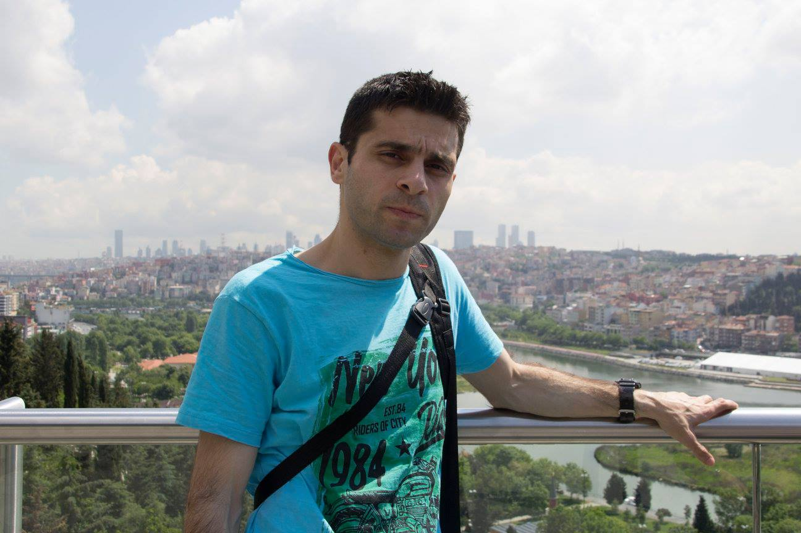

About
a time that stands in the photograph.

Experience
- Street Photographer
- Commercical Stock Photos
- Portrait And Lifestyle
Who is Fatih Yavasoglu?
Hello, I'm Fatih Yavasoglu. I am from Istanbul, turkey. I've been an amateur photographer for about 10 years. Initially a hobby, I'm now a freelancer providing content to visual media agencies worldwide (Alamy, Pexels, Adobe Stock)..
I see photography as a passion for capturing life's fleeting beauty, stunning landscapes, and intimate human stories. My work often focuses on combining the dynamics of street and urban life..
Mission:Providing solutions to the visual needs of creative projects by producing high quality, commercially available visuals..
10+
Has Been Taking Photos Ever Since
700+
License Photos
220+
Contributed photo